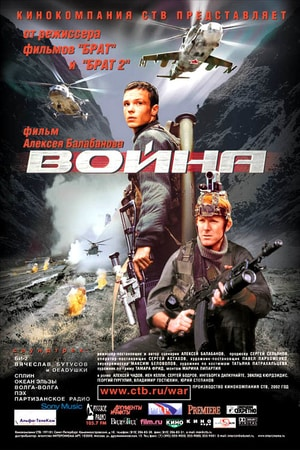
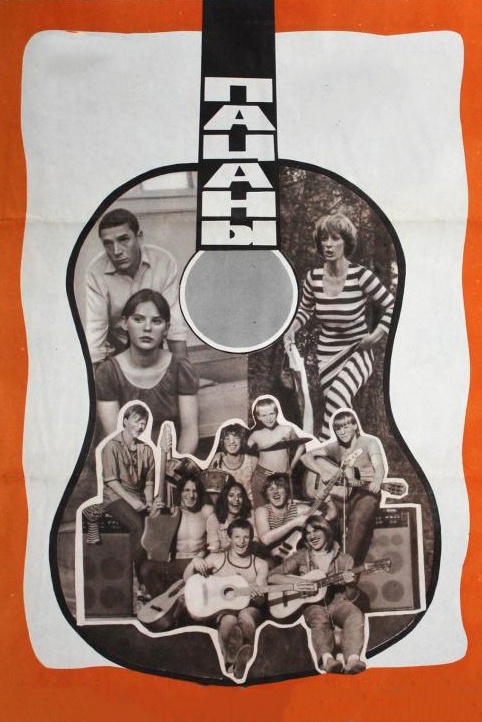

Аслан Гугаев, командир отряда чеченских боевиков, отпускает троих пленников: двух русских солдат, сержанта Ивана Ермакова и рядового Кулика — потому что они не контрактники, а призывники, и англичанина Джона Бойла — потому что он должен собрать два миллиона фунтов стерлингов и привезти деньги Гугаеву в качестве выкупа за свою невесту Маргарет. Маргарет остается у Аслана. Так же, как и капитан российской армии Медведев…
За отведенные ему два месяца Джон не находит нужную сумму и не находит поддержки у британских властей, зато, вернувшись в Россию, находит Ваню Ермакова, живущего в Тобольске. Джон и Ваня опять едут в Чечню. Чтобы освободить английскую девушку Маргарет и русского капитана Медведева…
За отведенные ему два месяца Джон не находит нужную сумму и не находит поддержки у британских властей, зато, вернувшись в Россию, находит Ваню Ермакова, живущего в Тобольске. Джон и Ваня опять едут в Чечню. Чтобы освободить английскую девушку Маргарет и русского капитана Медведева…
 Демобилизованный из армии, Данила Багров вернулся в родной городок. Но скучная жизнь российской провинции не устраивала его, и он решился податься в Петербург, где, по слухам, уже несколько лет процветает его старший брат. Данила нашел брата. Но все оказалось не так просто — брат был наемным убийцей…
Демобилизованный из армии, Данила Багров вернулся в родной городок. Но скучная жизнь российской провинции не устраивала его, и он решился податься в Петербург, где, по слухам, уже несколько лет процветает его старший брат. Данила нашел брата. Но все оказалось не так просто — брат был наемным убийцей…
 Жизни 800 человек общежития висят буквально на волоске из-за безразличия местных властей. В любую секунду здание может рухнуть. И кто бы мог подумать, что судьбы людей окажутся в руках простого сантехника. Но удастся ли ему что-то изменить и предотвратить катастрофу?
Жизни 800 человек общежития висят буквально на волоске из-за безразличия местных властей. В любую секунду здание может рухнуть. И кто бы мог подумать, что судьбы людей окажутся в руках простого сантехника. Но удастся ли ему что-то изменить и предотвратить катастрофу?
 2 сентября 1972 года. Монреаль. Хоккейная сборная СССР с разгромным счетом 7:3 победила канадских профессионалов из НХЛ в стартовом матче эпохальной Суперсерии СССР-Канада. Это была не просто игра, это была битва за свою страну, которая перевернула мировое представление о хоккее.
2 сентября 1972 года. Монреаль. Хоккейная сборная СССР с разгромным счетом 7:3 победила канадских профессионалов из НХЛ в стартовом матче эпохальной Суперсерии СССР-Канада. Это была не просто игра, это была битва за свою страну, которая перевернула мировое представление о хоккее.Теперь весь мир знал его просто по номеру 17. Валерий Харламов, забивший в том матче 2 шайбы, мгновенно взлетел на вершину славы. Сбылась его мечта — упорство, спортивный талант и суровые уроки великого тренера Анатолия Тарасова сделали из «номера 17» легенду мирового хоккея.

Хотя бы один взрослый, которого можно называть на «ты», должен быть в жизни каждого пацана… Актеры экстракласса — Валерий Приемыхов и тринадцатилетний Андрей Зыков — и ведущая тема фильмов Динары Асановой: непонимание, бесправие и одиночество подростка, против которого — весь мир взрослых.